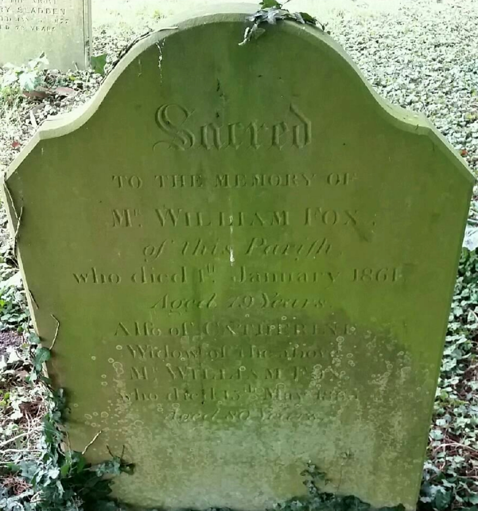
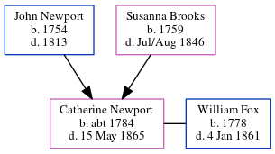

Catherine Fox (née Newport) c1784 - 1865
[ Home ] | [ Calendar ] | [ Surnames Index ] | [ Census Index ] | [ Family History ]The child of John Newport and Susanna Brooks, Catherine Newport, the four times great-aunt of Nigel Horne, was born in Upper Hardres, Kent, England c. 17841,2,3 and baptized in Ham, Kent, England on Sep 19, 1784. She married William Fox (a farming 10 acres employing 3 men) on St Mary the Virgin, Vicarage Lane, Elham, Kent, England on Nov 26, 18037.
During her life, she was living in Sibertswold, Kent, England in 18411; at Butter Street in Sibertswold on Mar 30, 18519; and in Sibertswold in 18613.
She died on May 15, 1865 in Shepherdswell, Kent, England4,5,6 and was buried in Sibertswold on May 19, 18658.
Parents
- John was born in 1754
- Susanna was born in 1759
Citations
- 1841 England Census Online publication - Provo, UT, USA: The Generations Network, Inc., 2006.Original data - Census Returns of England and Wales, 1841. Kew, Surrey, England: The National Archives of the UK (TNA): Public Record Office (PRO), 1841. Data imaged from the National (Age: 55)
- 1851 England Census Online publication - Provo, UT, USA: The Generations Network, Inc., 2005.Original data - Census Returns of England and Wales, 1851. Kew, Surrey, England: The National Archives of the UK (TNA): Public Record Office (PRO), 1851. Data imaged from the National
- 1861 England Census Online publication - Provo, UT, USA: The Generations Network, Inc., 2005.Original data - Census Returns of England and Wales, 1861. Kew, Surrey, England: The National Archives of the UK (TNA): Public Record Office (PRO), 1861. Data imaged from the National (Age: 77; Relation: Head)
- England & Wales deaths 1837-2007 - Findmypast
- England & Wales, FreeBMD Death Index: 1837-1915 Online publication - Provo, UT, USA: The Generations Network, Inc., 2006.Original data - General Register Office. England and Wales Civil Registration Indexes. London, England: General Register Office. © Crown copyright. Published by permission of the Cont
- England & Wales, National Probate Calendar (Index of Wills and Administrations),1861-1941 Online publication - Provo, UT, USA: Ancestry.com Operations Inc, 2010.Original data - Principal Probate Registry. Calendar of the Grants of Probate and Letters of Administration made in the Probate Registries of the High Court of Justice in England. Londo
- England Marriages 1538-1973 - Findmypast
- Kent Burials - Findmypast
- 1851 England, Wales & Scotland Census - Findmypast (was age 66 and the wife of the head of the household)
Media
Catherine Newport - probate

William Fox - Catherine Newport - gravestone

Kent, Canterbury Archdeaconry marriages 1538-1928 - GBPRS/CANT/M/97156207/2
England & Wales deaths 1837-2007 - BMD/D/1865/2/AG/000967/010
Kent Burials Transcription - GBPRS-D-83297273
1851 England, Wales & Scotland Census - GBC/1851/0005959458
England Marriages 1538-1973 - R_848233628/2
Family Tree
Generated by ged2site. Last updated on Jun 11, 2024